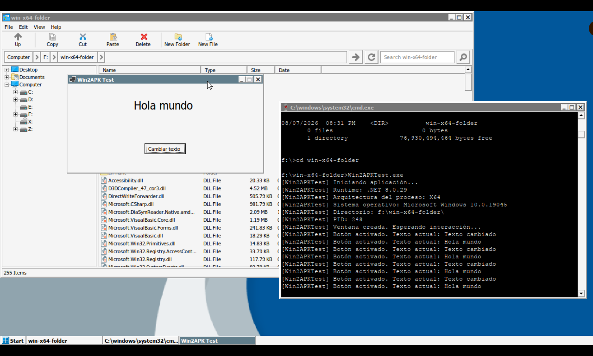
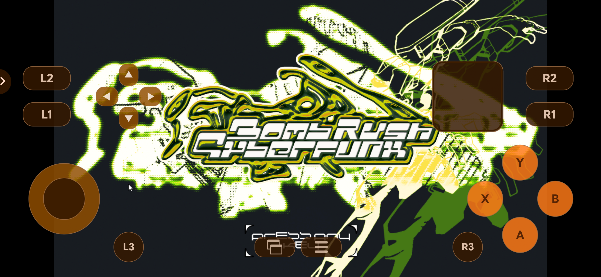
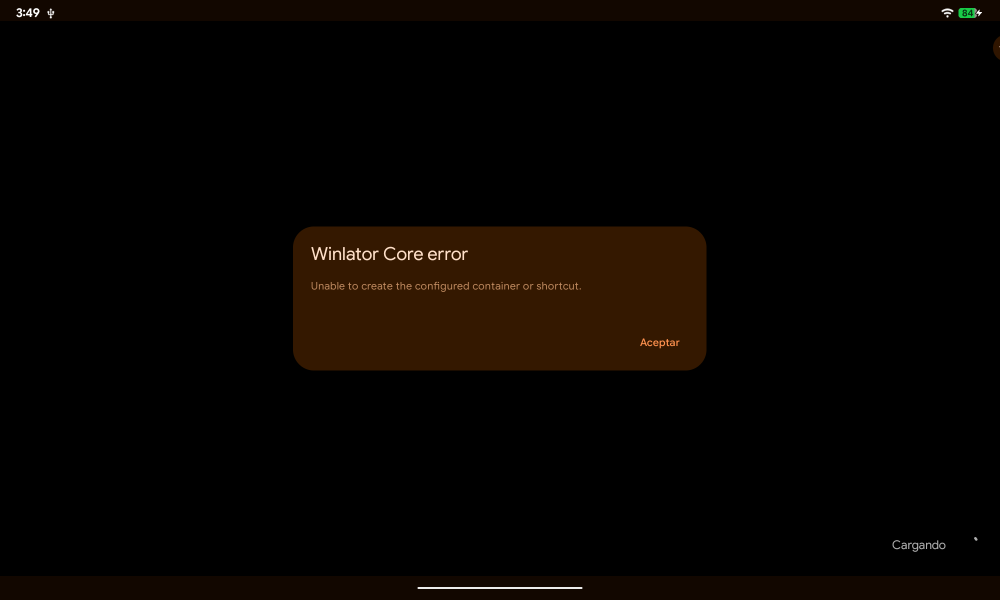

Winlator / componentes base
Capacidad de compatibilidad y ejecución
- Root filesystem Linux y contenedores
- Wine, Box64 y ruta gráfica
- Controles y servicios de ejecución
Primera sustentación oficial
Empaquetado, distribución y ejecución mediante un entorno de compatibilidad.
La barrera
¿Cómo pasar de una carpeta Windows a una experiencia Android instalable y repetible?

La propuesta
Entrada
Ejecutable, DLL, recursos, configuración y condiciones conocidas.
Salida
Artefactos firmados, configuración embebida, inventario y hashes.
Objetivo actual: automatizar el empaquetado y la preparación del entorno para distribuir y ejecutar aplicaciones Windows compatibles en Android ARM64 con menos configuración manual.
Aporte propio
Winlator / componentes base
Capacidad de compatibilidad y ejecución
Trabajo de Win2APK
Automatización, encapsulamiento y evidencia
Arquitectura real
En Linux x86-64 · Build time
En Android ARM64 · Run time
Prototipo actual

2.275 s
Proceso del juego visible después del lanzamiento del paquete preinstalado.
120 s
Aplicación y juego observables durante toda la ventana; pantalla de título y gamepad visibles.
Demostración
Validación técnica
| Dispositivo | GPU / familia | Evidencia disponible |
|---|---|---|
| Pixel 9a | Tensor / Mali | Perfiles gráficos y memoria |
| Redmi Note 8 | Snapdragon / Adreno | Arranque, UI y gamepad |
| Xiaomi Mi A3 | Snapdragon / Adreno | PAD y payload grande |
| Lenovo TB-J606F | Snapdragon / Adreno | Tablet, Core y fallos |
Error como evidencia
Intentamos
Ejecutar la publicación .NET inicial dentro de Winlator.
Observamos
Fallo de inicialización del heap y salida de CoreCLR.
Investigamos
Memoria del GC, modo de publicación y configuración del runtime.
Cambiamos
Publicación self-contained, GC workstation no concurrente y límite de heap.
Resultado
Win2APKTest abrió y respondió a interacción en Lenovo.
Estado al 22.09.2026
win2apk_payload_002 desde el proveedor de pruebas locales.
Coherencia e impacto
La ejecución manual exige configurar capas, rutas, gráficos y distribución.
CLI, paquete Core, segmentación de payload, arranque directo y evidencia reproducible.
Reducir pasos especializados y facilitar la reutilización de software Windows compatible.
No afirmamos todavía: compatibilidad universal, ahorro económico cuantificado, reducción ambiental ni adopción por usuarios finales.
¿Qué demostramos hasta ahora?
Fuera de los 7 minutos
Arquitectura, criterios, dispositivos, métricas, limitaciones, licencias y fuentes.
Backup · Arquitectura
Backup · Método
Backup · Muestra
| Equipo | SoC / GPU | Factor | Uso en el proyecto | Lectura correcta |
|---|---|---|---|---|
| Google Pixel 9a | Tensor / Mali-G715 | Teléfono | Memoria, drivers y BCn | Familia Mali moderna |
| Redmi Note 8 | Snapdragon 665 / Adreno 610 | Teléfono | Arranque, UI y gamepad | Demo actual |
| Xiaomi Mi A3 | Snapdragon 665 / Adreno 610 | Teléfono | PAD y payload grande | Entrega verificada |
| Lenovo TB-J606F | Snapdragon 662 / Adreno 610 | Tablet | Core, layout y fallos | Factor tablet |
Propósito de la muestra: encontrar variación de GPU, sistema y factor de forma. No permite estimar una tasa poblacional de compatibilidad.
Backup · Distribución
Un APK único no pudo comprimir un asset de 4,782,573,186 bytes y produjo Required array size too large.
La evidencia descartó el enfoque monolítico para payloads de ese tamaño.
La CLI planificó Cuphead en asset packs y produjo:
Backup · Límites
targetSdk 36 bloqueó experimentalmente la ejecución de Box64 desde datos de app; el prototipo actual usa 28.Backup · Evidencia
Backup · Dominio
Backup · Referencias
Trazabilidad completa: consulte docs/fuentes.md para URL, uso en diapositiva, archivos locales y alcance de cada afirmación.